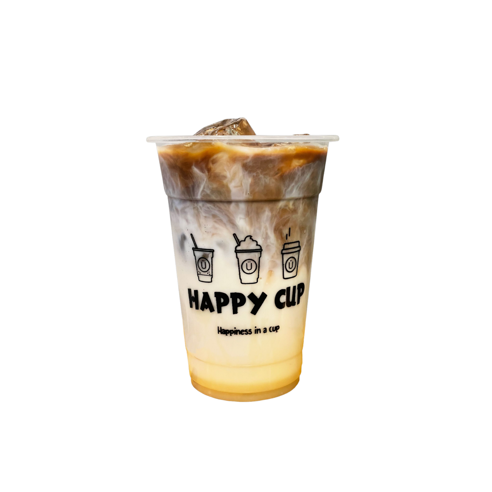
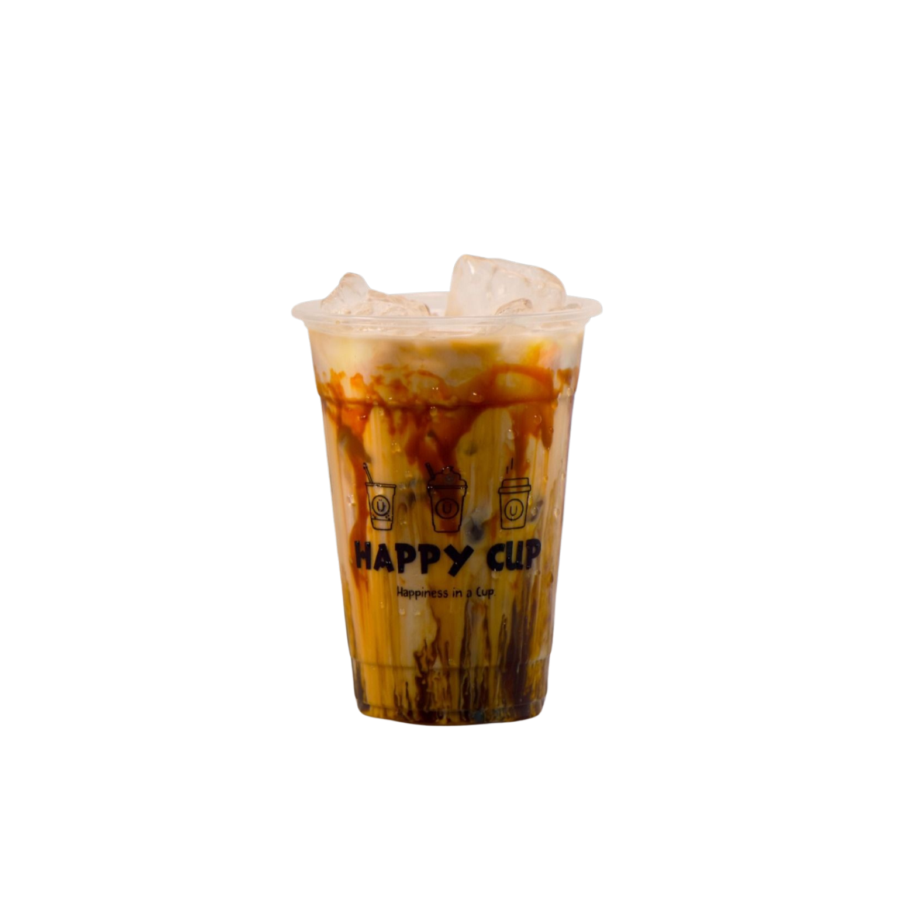
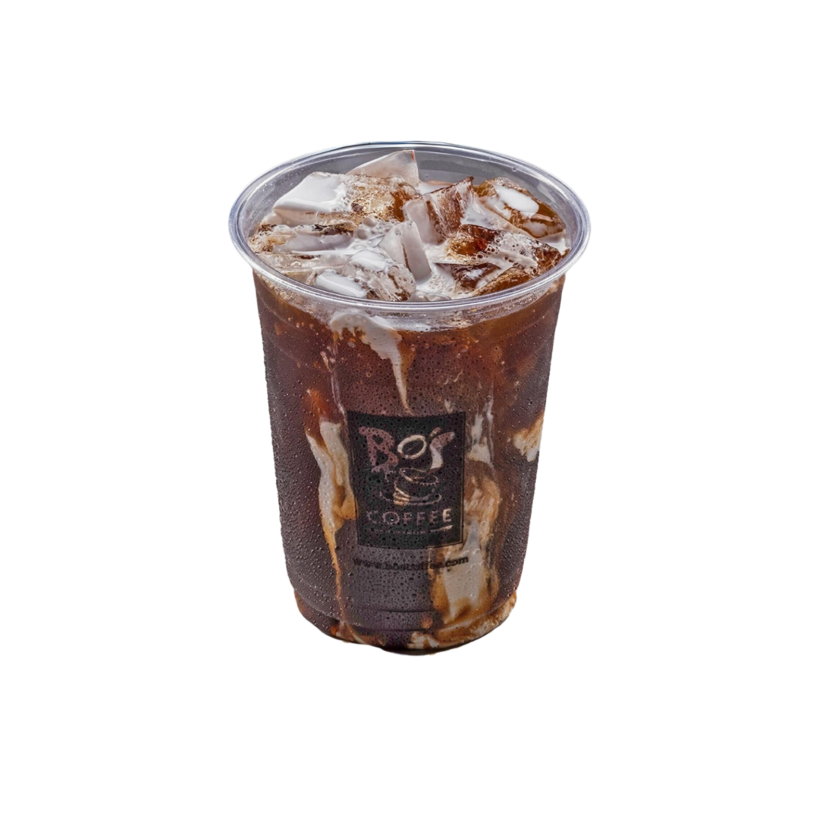
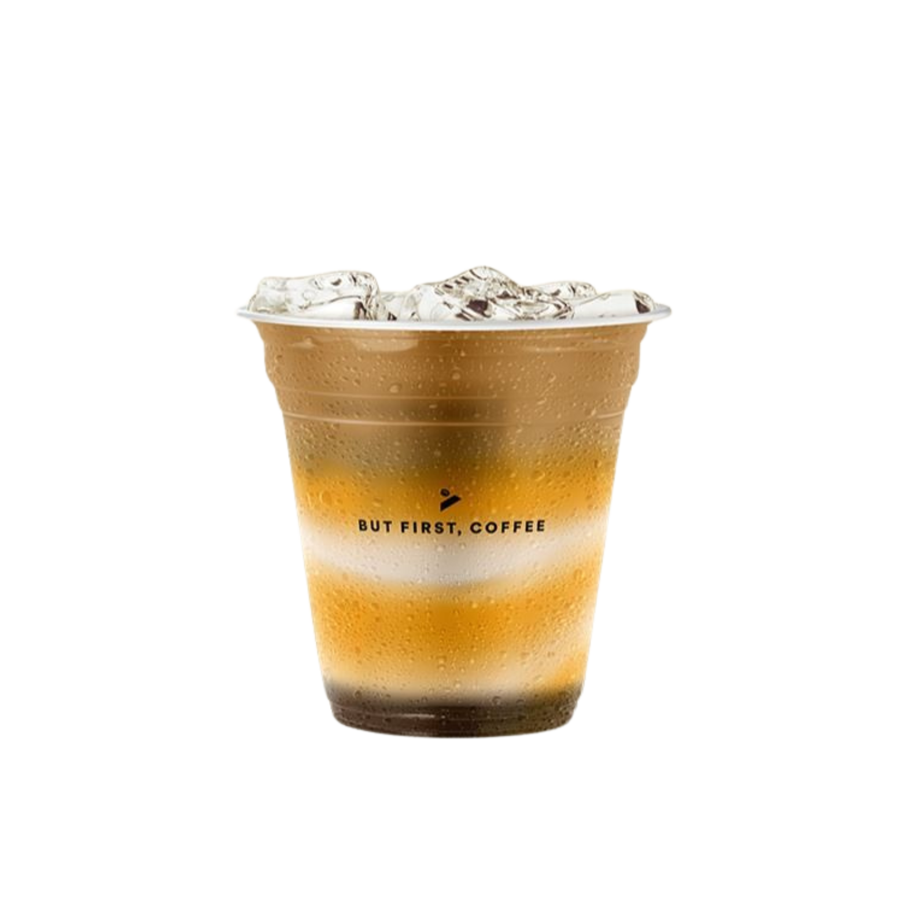
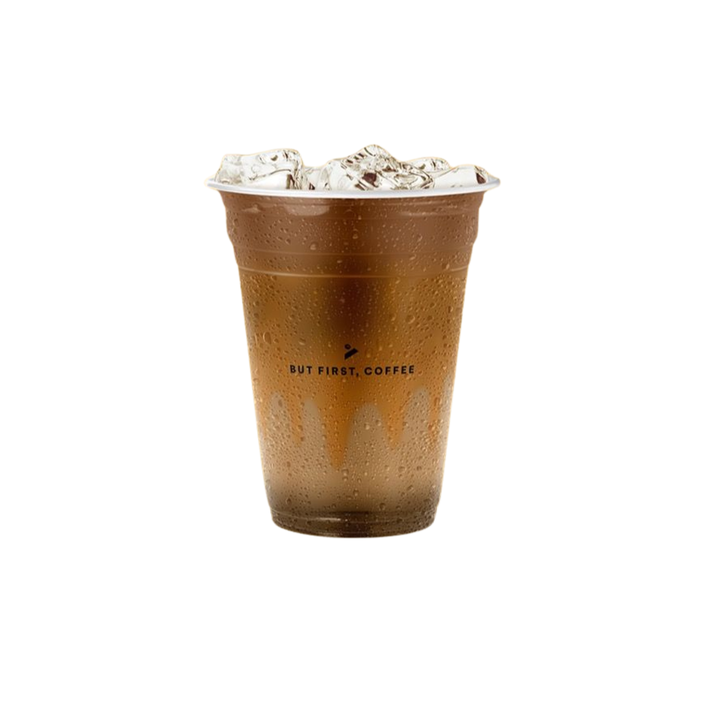
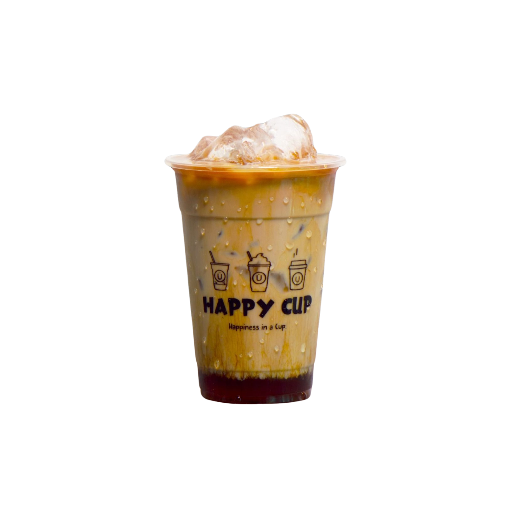

A handpicked selection of our all-time favorite coffee variations, flavor breakdowns, and honest reviews to help you discover your next go-to brew.

Rich espresso blended with silky condensed milk & fresh cream.
"The ultimate comfort coffee. The sweetness never overpowers the bold espresso notes. Best paired with pastry for study breaks!"

Layered espresso over vanilla milk with slow-cooked caramel drizzle.
"Not only does it look gorgeous in photos, but the rich buttery caramel cascading through iced milk makes every sip feel luxurious."

24-hour slow steeped single-origin roast infused with full-cream milk.
"The cleanest caffeine boost you can get. Extremely smooth without any acidity or bitterness. Keeps me laser-focused for hours of programming."

Shaken espresso with toasted muscovado syrup and subtle cinnamon warmth.
"A refreshing modern classic. The molasses depth of brown sugar enhances the coffee beans instead of just adding plain sweetness."

Sea-salted caramel infused espresso balanced with velvety micro-foam.
"The pinch of sea salt cuts through the richness, creating an addictive contrast of sweet and savory in every gulp."

Earthy roasted hazelnuts blended with highland espresso and steamed milk.
"Perfect for lovers of nutty, aromatic coffee. It has a cozy, warm aroma that immediately makes study time more relaxing."
"If you want something uplifting and aesthetic that tastes as amazing as it looks, go for the Iced Velvet Caramel Macchiato or Spanish Latte. It's the perfect treat after a long day of classes!"
"When you have heavy coding tasks or exams, you need sustained energy without the sugar crash. My number one recommendation is the Artisanal Cold White Brew—bold, rich, and ultra-smooth."
Pick: Cold White Brew or Double Shot Espresso for high caffeine and zero distraction.
Pick: Spanish Latte or Caramel Macchiato for smooth caramel sweetness.
Pick: Toasted Hazelnut or Salted Caramel Latte for rich complexity.